Explore Santo Domingo
A Brief History
Santo Domingo's Zona Colonial contains the Americas' oldest cathedral and university foundations laid by Spanish settlers after 1496. Ozama fortress, Alcázar de Colón, and cobbled streets record early Caribbean colonisation on the Ozama River. Malecón sea walls and Ozama river parks extend colonial plazas along the Caribbean capital waterfront. Walking routes through the historic centre help visitors relate these monuments to wider patterns of settlement and civic life in Dominican Republic.
Attractions Map
Top Sights & Activities
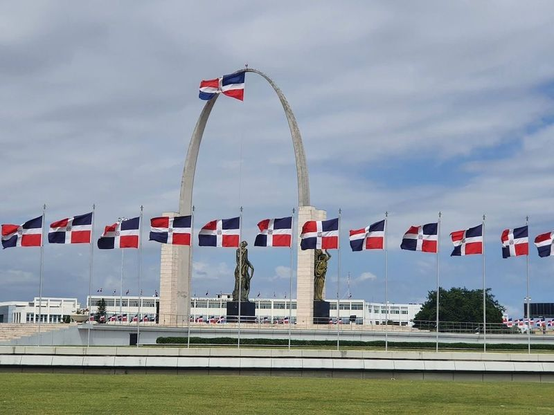
Plaza de la Bandera Republica Dominicana
Plaza de la Bandera Republica Dominicana is a significant historical site in the Dominican Republic. It features a square adorned with Dominican flags flying above a triumphal arch, as well as statues and the tomb of an unknown soldier. This place reflects the country's culture and is accessible to everyone free of charge. The statue commemorates an important moment in history, offering opportunities for research and photography.
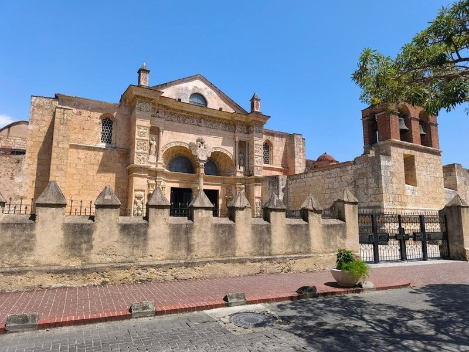
Columbus Park
Columbus Park, also known as Parque Colon, is a historic square located in the Ciudad Colonial district of Santo Domingo. It features a prominent statue of Christopher Columbus and serves as the starting point for exploring the city's notable street, Calle del Conde. The park is surrounded by historic monuments and buildings and is a popular spot for locals and tourists to relax, people-watch, and enjoy the ambiance of Zona Colonial.
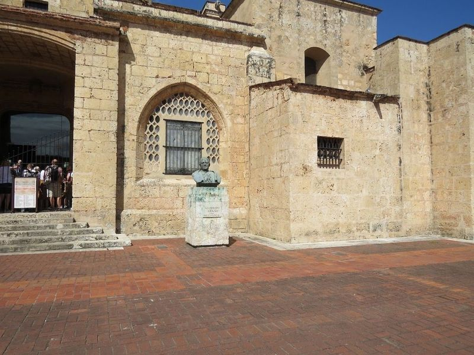
Nuestra Señora de la Encarnación
Nuestra Señora de la Encarnación, also known as Santo Domingo Cathedral or Catedral Primada de America, is a remarkable 16th-century Gothic cathedral located in the Western hemisphere. Its golden coral limestone front and historic art pieces make it a attraction. The cathedral's construction began in 1514 and continued until 1540, resulting in a blend of architectural styles including Gothic vaults, Romanesque arches, and baroque ornamentation.
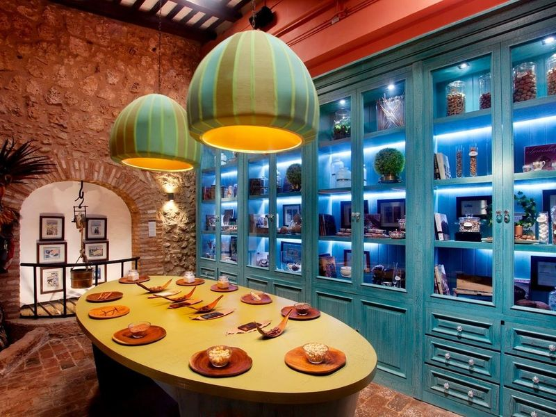
Kahkow Experience
Immerse yourself in the world of chocolate at Kahkow Experience, located in Santo Domingo, Dominican Republic. Despite the country's lush rainforest climate being ideal for cacao cultivation, learn about and taste chocolate right in the city. The flagship store offers a Disney-like experience where explore the history of chocolate, walk through a cocoa forest, and indulge in various chocolate tastings.
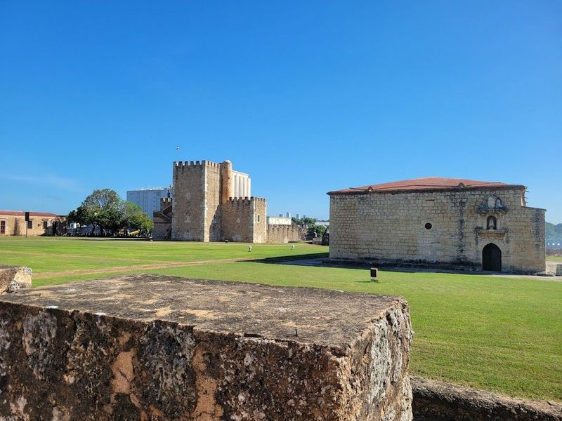
Fortaleza Ozama
A 16th-century fortress built in a medieval style offers picturesque river views and guided tours. Explore it by heading down Calle Las Damas, along with other nearby historic sites such as the Museo de las Casas Reales and Alcazar de Colon. Delicious seafood awaits at Pate Palo, the oldest tavern in the Americas, followed by cocktails on a colonial terrace at Lulu Tasting Bar.
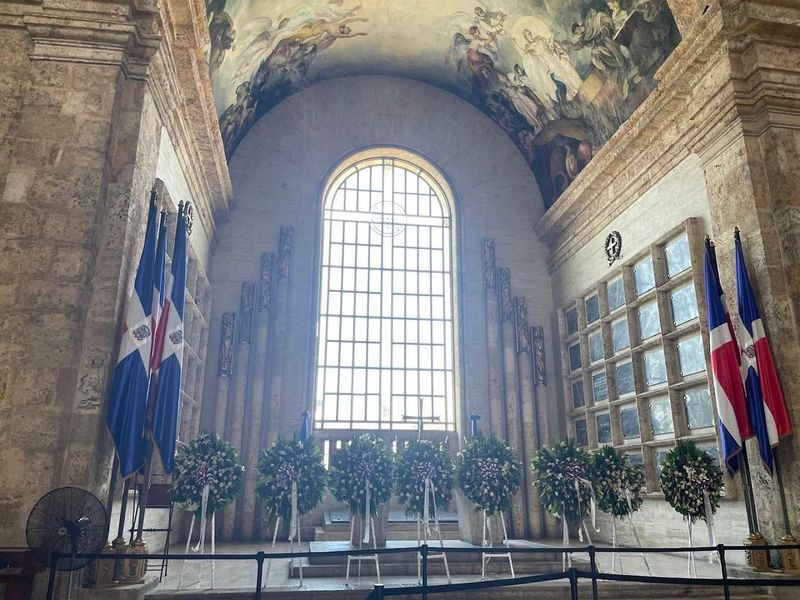
Plaza María de Toledo
Nestled in a quaint alley between Calle Las Damas and Calle Isabel La Catolica, Plaza María de Toledo pays tribute to the wife of Diego Colon, son of Christopher Columbus. This charming plaza exudes colonial allure and offers a perfect setting for leisurely conversations with friends or family. Visitors can savor the ambiance of the colonial zone while enjoying a beer or simply basking in the surroundings.
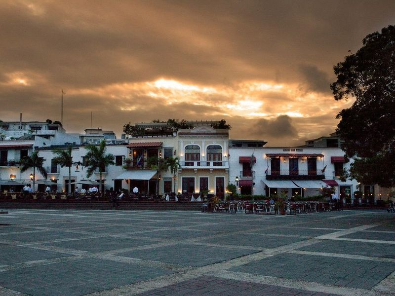
Plaza de la Hispanidad or Spain
Plaza de la Hispanidad, also known as Spain Square, is a historic plaza in Santo Domingo's colonial zone. It is a hub for art shows, concerts, and other events. The square is surrounded by significant attractions such as Alcazar de Colon, Basilica Cathedral of Santa Maria la Menor, Calle Las Damas, and Fortaleza Ozama. Casa Colon and Museo de las Casas Reales are also nearby.
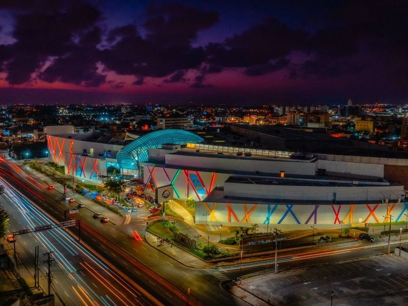
Sambil Santo Domingo
Sambil Santo Domingo is a modern and expansive mall In the city, offering a diverse array of shops, dining options, and entertainment facilities. Families with kids will find plenty to do here, from exploring brand-name stores like Nike and Aldo to enjoying activities such as an aquarium, play area, video games, 3D dinosaurs exhibit, laser tag arena, trampoline park called Summit and inflatable area for kids.
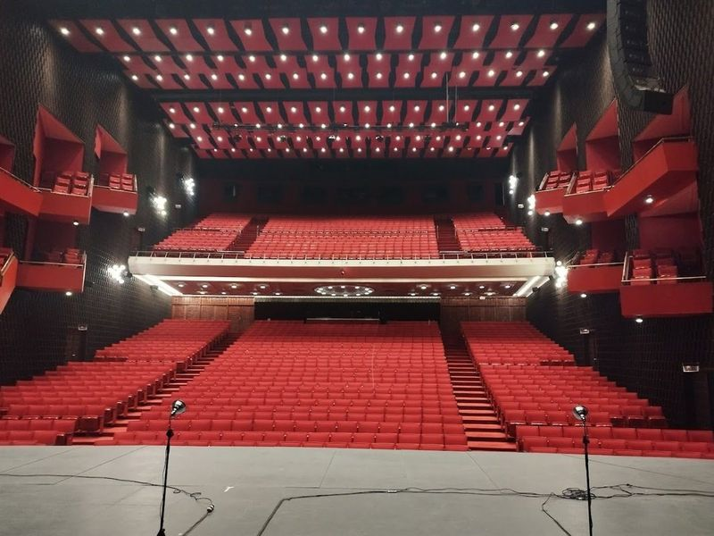
Teatro Nacional Eduardo Brito
Casa de Teatro is an arts center that showcases a variety of cultural events and plays. The venue features a bohemian-colonial style space, including a theater with an outdoor courtyard and an art gallery at the entrance. It is widely regarded as the theater in the country, offering impressive shows and a wonderful experience. However, some improvements can be made such as online ticketing and onsite beverage offerings.
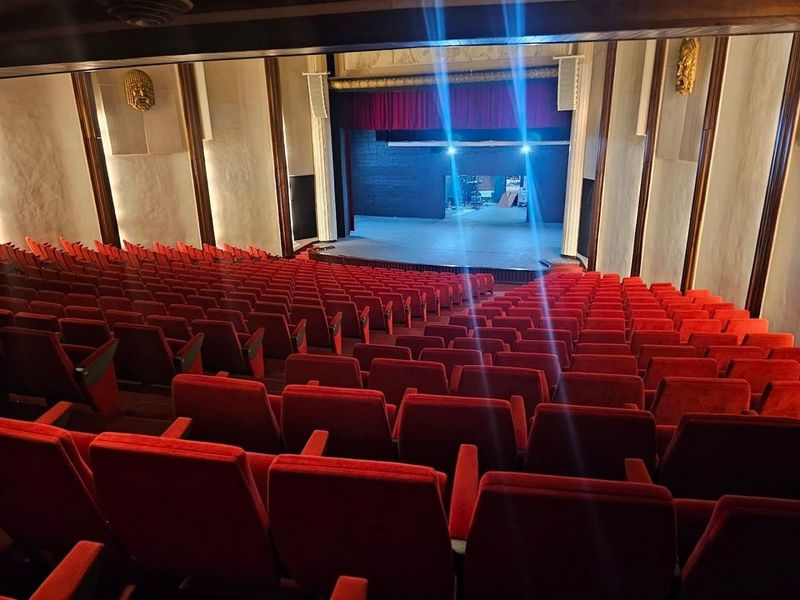
Palace of Fine Arts Dominican Republic
The magnificent neoclassical structure, known as the Palace of Fine Arts Freddy Beras-Goico, was constructed during Rafael Leonidas Trujillo's dictatorship to foster artistic and cultural development in the Dominican Republic. This venue hosts various events such as theatrical performances, concerts, award ceremonies, and exhibitions.
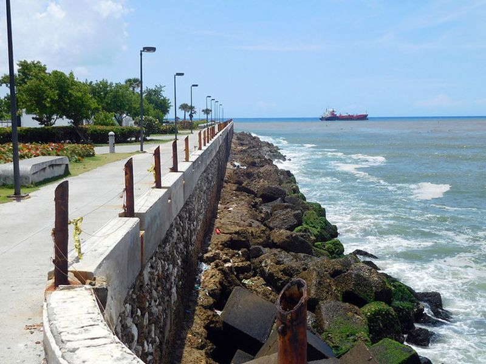
Santo Domingo Malecon
Santo Domingo Malecon is listed among principal sites for Santo Domingo within Dominican Republic. Municipal and regional heritage listings document its place in the historic centre and travellers routes through Santo Domingo. Santo Domingo Malecon is listed among principal sites for Santo Domingo within Dominican Republic.
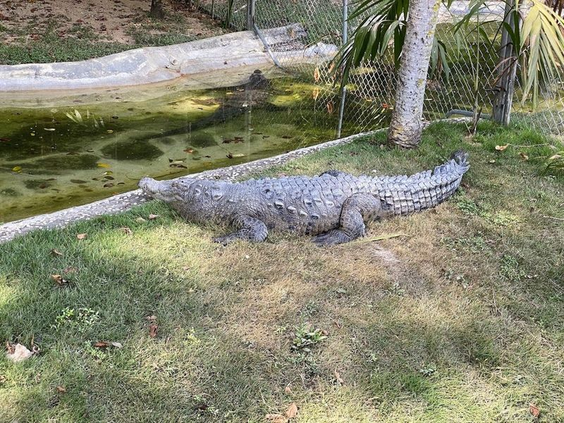
Parque Zoológico Nacional
Parque Zoológico Nacional, also known as Zoo Dom, is a family-friendly zoo located in Santo Domingo. The zoo features a diverse collection of mammals, reptiles, birds, and exotic animals for visitors to observe. Despite being simple and small, the zoo offers a worthwhile experience with healthy animals that have ample space to roam. Visitors can take a tram tour around the area to see various animal exhibits and learn about them from the trolley driver.
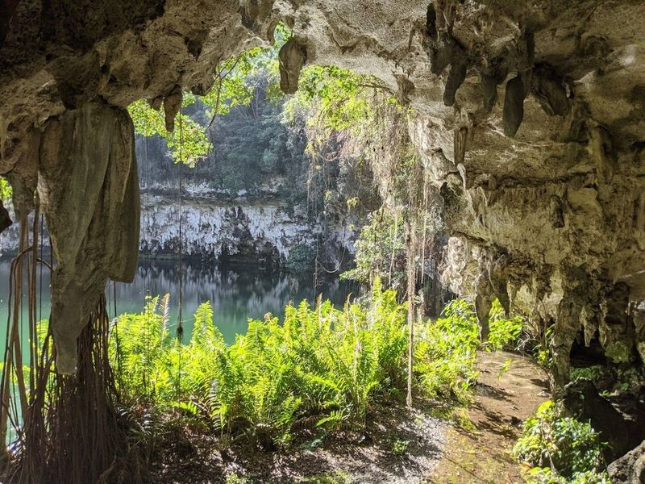
The Three Eyes National Park
The Three Eyes National Park in Santo Domingo is a must-visit destination, offering a tranquil public park with a series of caverns housing scenic underground lagoons. Descend below the earth's surface through limestone caves and emerge at the first of three crystal-clear pools. This park has been featured in jungle adventure movies and is among the -preserved rainforests in the Caribbean. It's an ideal spot for nature lovers and those seeking an subterranean experience.
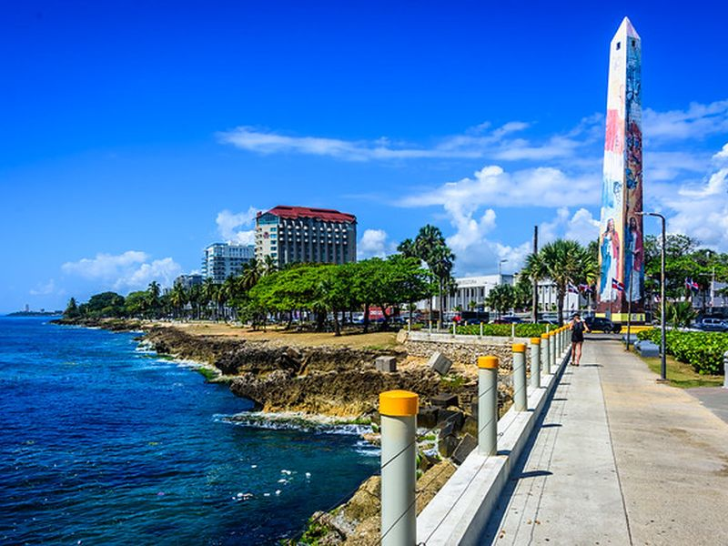
Plaza Juan Barón
Plaza Juan Barón is listed among principal sites for Santo Domingo within Dominican Republic. Municipal and regional heritage listings document its place in the historic centre and travellers routes through Santo Domingo. Plaza Juan Barón is listed among principal sites for Santo Domingo within Dominican Republic.
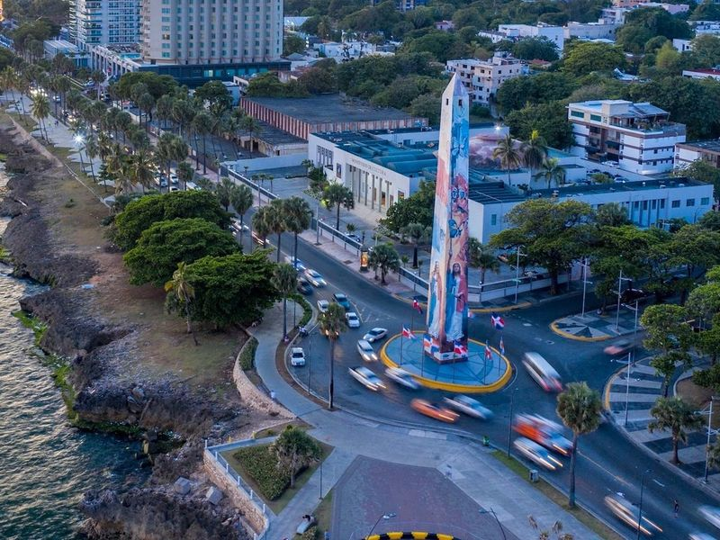
Santo Domingo Obelisk
The Santo Domingo Obelisk, a towering monument standing 131 feet high, was constructed in 1937 to commemorate the change of name from Santo Domingo to Ciudad Trujillo under the rule of dictator Rafael Leonidas Trujillo. Situated on Avenida George Washington, Malecon in Santo Domingo, Distrito Nacional, Dominican Republic, this historical landmark was specifically designed in 1936 to ensure its visibility from any point along the renowned Malecon Avenue.
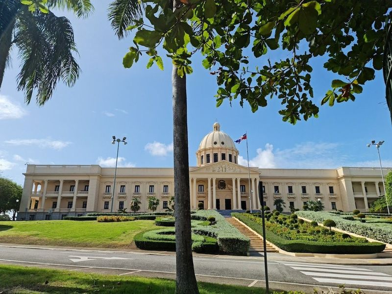
National Palace of the Dominican Republic
The National Palace of the Dominican Republic is a striking domed building that serves as the seat of government and is surrounded by formal gardens. It also houses the Museum of the Royal Houses, offering insights into the country's history and cultural heritage from Christopher Columbus' invasion onwards. Once serving as the palace of the governor of Santo Domingo during Spain's colonization of the Americas, it stands as a historical gem.
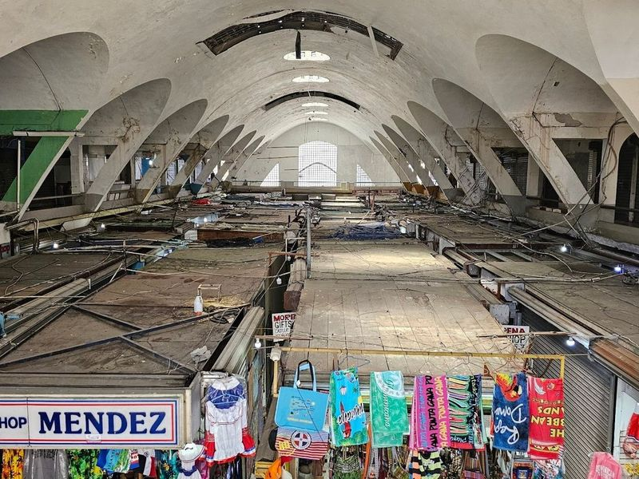
Mercado Modelo
Mercado Modelo in Santo Domingo is a historic market offering a wide variety of local handicrafts, from amber jewelry to wood carvings. The market has been around for ages and is known for its diverse range of products. Visitors can find everything they desire at the numerous stalls, where bargaining is common practice due to varying prices. It's recommended to take a tour of the market before making any purchases to ensure you get the deal.
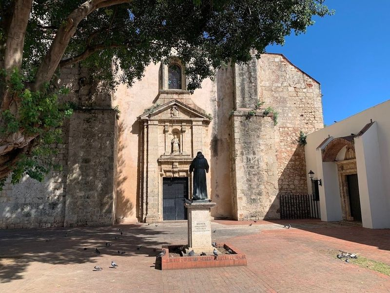
Church of Our Lady of Mercies
Av. George Washington, also known as "El Malecon," is a popular waterfront avenue in the city, running alongside the Caribbean Sea. It is a bustling area with hotels, casinos, and palm-lined boulevards that attract many visitors. The surrounding Gazcue area features significant landmarks such as the Palacio Nacional, the National Theater, museums in Plaza de la Cultura, and the Palace of Fine Arts.
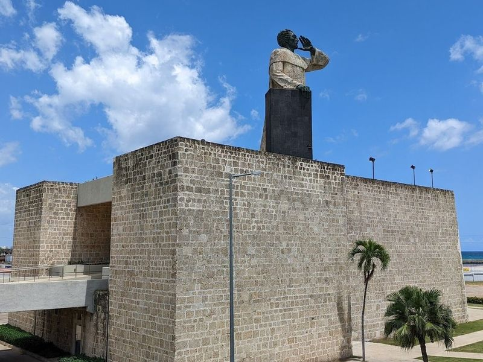
Monument to Friar Antonio of Montesino
75 Grados is a popular club in Santo Domingo, known for its lively atmosphere and Latin beats. It's a favorite among young people and offers affordable sugary cocktails. The club attracts expats, tourists, and locals alike, making it a great place to meet new people. With two different atmospheres - one relaxed outside area and an energetic inside space - 75 Grados offers a unique experience. The music is loud, but the crowd is friendly and the security is praised as excellent.
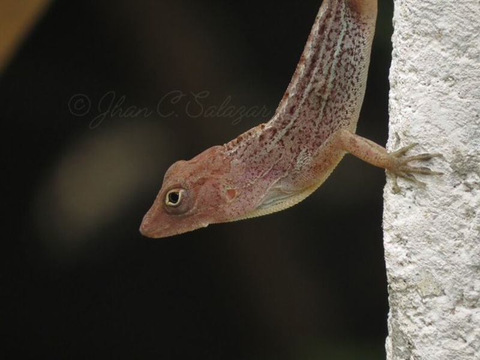
National Botanical Garden Dr. Rafael María Moscoso
National Botanical Garden Dr. Rafael María Moscoso is listed among principal sites for Santo Domingo within Dominican Republic. Municipal and regional heritage listings document its place in the historic centre and visitor routes through Santo Domingo.